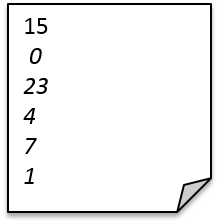

Test name elements
A group of elements that represent test types or special classes such as COGO in SmartRDI.
Test name elements are a category of elements, each of which corresponds to a test type or a special class in SmartRDI.
A test name element refers to a <func>, <digCap>, <emap>, <smartVec>, <dc>, <tmu>, <cogo>, <protocol>, <pmux>, <dgt> or <rfm> element. It is the last level of the ORE file and saves test results as values of its attributes.
For a structure overview of the ORE file with more elements, see ORE file format.
Formatting test results data in ORE file
How does a test name element save different data types of SmartRDI test results?
-
A single value result (bool, int, double) is saved as a string to a test name element's attribute in the ORE file.
ORE file syntax:
<test_name_element result_attribute = "value" />
result_attribute refers to a special attribute of a test name element that stores SmartRDI test results.
Example ORE entry:
<dc value = "2.5" />
This entry saves the test result value returned by the SmartRDI API
dc()...getValue().... -
An array result (ARRAY_I, ARRAY_D, ARRAY_LL) is saved as a comma-separated string or a file path to a test name element's attribute in the ORE file.
ORE file syntax:
<test_name_element result_attribute = "value1,value2,value3..." /> <test_name_element result_attribute = "waveform_file_path" />
result_attribute refers to a special attribute of a test name element that stores SmartRDI test results.
Example ORE entry 1:
<digCap vector = "5,6,7,8" />
This entry saves the test result value returned by the SmartRDI API
digCap()...getVector()....Example ORE entry 2:
<dgt waveform ="./ORE/wave" />
This entry saves the test result value returned by the SmartRDI APIdgt()...getWaveform().... Waveform file supports absolute and relative path (reference point is the device path). File format is a single value (bool, int or double) per line.
Functional changes
- Introduced in SmartRDI 2.5.0